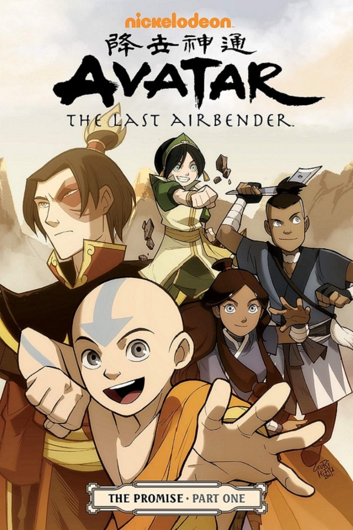

All about Avatar: The Last Airbender

About The Show
Avatar is my personal favorite show of all time. In my opinion, every person should watch the show when they have the time. Its characters, stories, and lessons have bought about a positive change in my life, and in a some aspects changed my outlook on life altogether. The world of the show is divided into four nations. The Water Nation, the Air Nation, the Earth Nation, and the Fire Nation. During the events of the show, the world has been under attack by the Fire Nation for a hundred years, whose goal has been to expand their empire to every corner of the world. Most of the nation's citizens can control the specific elements of their nation, and the Avatar is the only person who can control all four elements. It is his job to maintain the balance amongst the four nation, but he has been missing for a hundred years. But finally, he is discovered frozen in ice, and the show follows his journey with his friends in his quest to restore the balance once again.
The Characters
- Aang - The protagonist of the story, the twelve year old avatar who has been trapped in ice for a hundred years. He's an an overall cheerful character, albeit a little naive.
- Zuko - The firebending antagonist at the start of the story, but has some incredible character development to move him away from that role. He is my favorite example of character development done right in a story.
- Katara - The waterbending girl who discovers Aang in the ice, and then accompanies him on his journeys, while growing as a character herself as well. SHe also plays the primary romantic interest of Aang.
- Sokka - The elder brother of Katara, who also accompanies Aang on his journey. While unable to bend any element, his character growth centers around learning to hone his skills and intellect, and being the leader of the group.
- Toph - The blind earthbending girl, who teaches Aang about earthbending. A character who is tough in nature, and has a lot of character growth reagrding learning to accept that she can belong in a group.
- Iroh - The firebending uncle of Zuko, and by far my favorite character in the show. He imparts wisdom amd lessons that are rarely seen in any show, and have made a direct impact in my life. Seeing him guide these young characters through the show is an absolute treat.
- Ozai - The primary firebending antagonist of the show. He is the firelord, and the father of Zuko. While a simpler character in motivations than other famous villains, his writing is well done, and he holds up well in a show full of such excellently written characters.